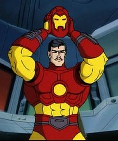

IRON MAN
Iron Man (conocido en español como el Hombre de Hierro) es un superhéroe que aparece en los cómics estadounidenses publicados por Marvel Comics. El personaje fue co-creado por el escritor y editor Stan Lee, desarrollado por el guionista Larry Lieber y diseñado por los artistas Don Heck y Jack Kirby. Hizo su primera aparición en Tales of Suspense #39 (marzo de 1963), y recibió su propio título en Iron Man #1 (mayo de 1968).
Anthony Edward Stark conocido como Tony Stark, es un multimillonario magnate empresarial estadounidense, playboy e ingenioso científico, quien sufrió una grave lesión en el pecho durante un secuestro en el Medio Oriente. Cuando sus captores intentan forzarlo a construir un arma de destrucción masiva crea, en cambio, una armadura para salvar su vida y escapar del cautiverio. Más tarde, Stark desarrolla su traje, agregando armas y otros dispositivos tecnológicos que diseñó a través de su compañía, Industrias Stark. Él usa el traje y las versiones sucesivas para proteger al mundo como Iron Man. Aunque al principio ocultó su verdadera identidad, Stark finalmente declaró que era, de hecho, Iron Man en un anuncio público.

Inicialmente, Iron Man no era más que un concepto de Stan Lee con el fin de explorar los temas de la Guerra Fría, particularmente el papel de la tecnología y la industria estadounidenses en la lucha contra el comunismo. Las re imaginaciones posteriores de Iron Man han pasado de los motivos de la Guerra Fría a los asuntos contemporáneos de la época, como lo es el terrorismo, la corrupción y la delincuencia en general.